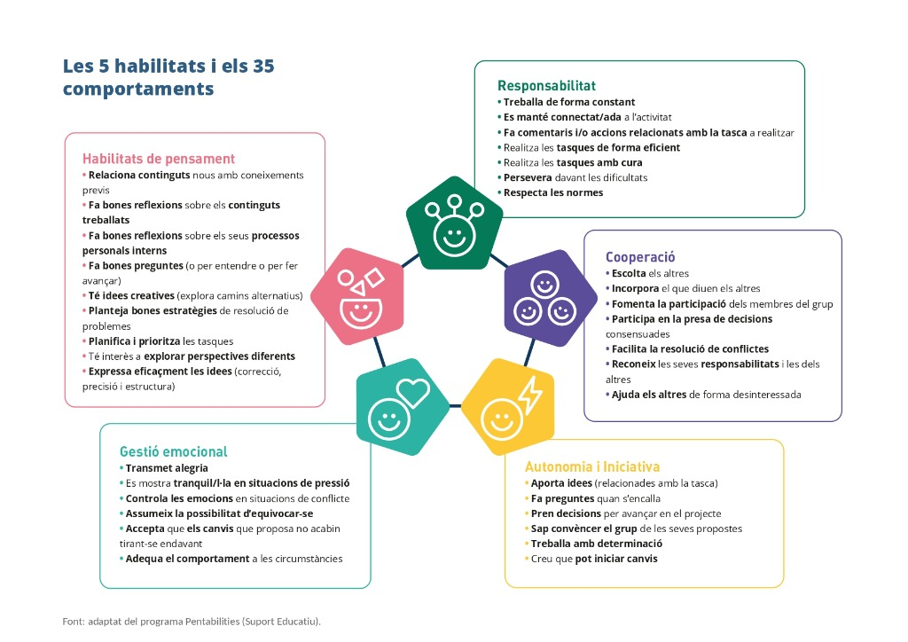

Habilitats socioemocionals
Al projecte Pocona no només aprenem càlculs, física i telecomunicacions: aprenem a col·laborar, a escoltar-nos, a superar dificultats i a créixer com a equip humà.
1. Què són les habilitats socioemocionals
Les habilitats socioemocionals són el conjunt de capacitats que ens permeten entendre i gestionar les nostres emocions, relacionar-nos de manera positiva amb els altres, col·laborar en equip, mantenir l'atenció i la constància en les tasques i prendre decisions responsables i encertades.
Exemples concrets i quotidians del dia a dia a l'aula:
2. Per què és important treballar-les
Aquestes habilitats no són un afegit al marge dels continguts de tecnologia i matemàtiques: són la base que fa possible que puguem aprendre de veritat i conviure amb èxit.
|
1. En com aprenem
Quan sabem gestionar la frustració i mantenir la calma, el nostre cervell pensa amb més claredat, comprèn millor els conceptes nous i recorda el que ha après.
|
2. En com treballem en equip
Els grans projectes d'enginyeria mai els fa una sola persona. Aprendre a comunicar-se i cooperar transforma un grup en un equip unit i imparable.
|
|
3. En el benestar i la convivència
Ens ajuden a sentir-nos segurs a l'aula, a expressar el que sentim sense por al judici dels altres i a conviure amb empatia i respecte mutu.
|
4. Per a la vida adulta i el món laboral
En qualsevol feina o estudi futur, les empreses i organitzacions valoren tant o més les habilitats humanes (saber comunicar, adaptar-se i resoldre conflictes) que els títols tècnics.
|
3. Com s'avaluen
L'avaluació d'aquestes habilitats es fa a través de diverses mirades complementàries al llarg de totes les sessions del projecte:
Aquestes avaluacions no serveixen per jutjar ningú ni posar una etiqueta fixa sobre qui ets. Tothom té dies millors i pitjors. L'únic objectiu és que prenguis consciència de com participes per poder entrenar i evolucionar aquestes habilitats dia a dia.
4. Què s'avaluarà durant el projecte
Durant el projecte Pocona avaluarem un comportament transversal que treballarem continuadament en totes les sessions, acompanyat d'un comportament específic per a cada bloc de treball.

Taula de Comportaments per Blocs de Treball:
| Bloc | Comportament específic | Habilitat relacionada |
|---|---|---|
|
Transversal (Tot el projecte) |
Es manté connectat/da a l'activitat de grup Atenció activa, participació i no distreure's de la tasca comuna. |
Responsabilitat |
|
Bloc 1 Cooperació i IDH |
Fa bones reflexions sobre el contingut treballat Analitza la relació entre dades oficials, justícia social i tecnologia. |
Habilitats de pensament |
|
Bloc 2 Anàlisi de Problemes |
Fa bones preguntes (o per entendre o per avançar) Planteja dubtes constructius per desbloquejar el treball de l'equip. |
Habilitats de pensament |
|
Bloc 3 Terreny i Comunicacions |
Persevera davant les dificultats No es rendeix davant càlculs geomètrics o perfils topogràfics complexos. |
Responsabilitat |
|
Bloc 4 Càlcul d'Estructures i Torres |
Aporta idees relacionades amb la tasca Proposa alternatives creatives per al disseny de la infraestructura. |
Autonomia i Iniciativa |
|
Bloc 5 Sistemes i Energia Solar |
Fomenta la participació dels membres del grup Dona veu a tothom i s'assegura que tots els companys puguin aportar. |
Cooperació |